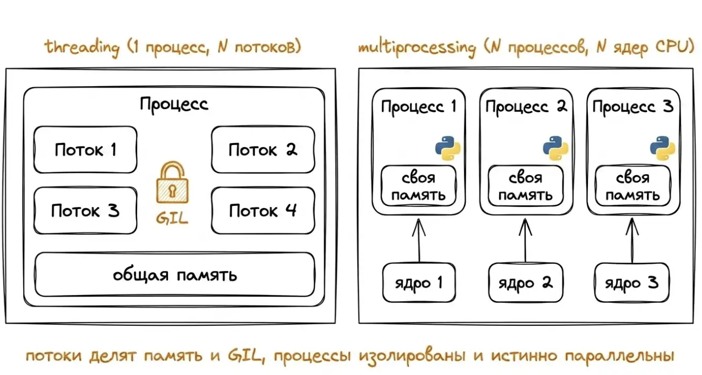

Теория: Параллельное программирование
1. Введение: зачем это нужно?
Вы наверняка замечали, что современные компьютеры имеют 4, 6 или 8 ядер. Ещё 15 лет назад многоядерные процессоры были редкостью, а сейчас есть даже в смартфонах. Почему?
Раньше процессоры становились быстрее за счёт увеличения тактовой частоты — числа операций в секунду. Но около 2005 года рост частоты остановился: процессоры стали слишком сильно греться. Вместо того чтобы делать одно ядро сверхбыстрым, производители стали добавлять несколько ядер на один кристалл.
Однако просто купить многоядерный компьютер недостаточно. Если программа не умеет делить работу между ядрами, она будет использовать только одно, а остальные будут простаивать. Параллельное программирование учит нас писать программы, которые могут выполнять несколько задач одновременно, используя все ядра процессора.
Конкурентность и параллелизм — не одно и то же
Часто эти понятия путают. Важно различать их с самого начала.
| Термин | Описание | Пример из жизни |
|---|---|---|
| Конкурентность (concurrency) | Несколько задач продвигаются одновременно, но физически в каждый момент выполняется только одна. Процессор быстро переключается между задачами. | Один повар варит суп и нарезает салат, переключаясь между кастрюлей и доской. |
| Параллелизм (parallelism) | Несколько задач физически исполняются в один и тот же момент на разных ядрах. | Два повара работают одновременно: один варит суп, другой режет салат. |
В Python потоки (threading) дают конкурентность, но не всегда параллелизм из‑за GIL. Процессы (multiprocessing) дают настоящий параллелизм.
2. Процессы и потоки — в чём разница?

💡 Аналогия: Процесс — это команда разработчиков, работающая над проектом. Потоки — это отдельные участники, которые сидят за одним столом (общая память) и могут передавать друг другу бумажки. А разные процессы — это разные команды, работающие в разных комнатах (изолированная память).
- Процесс — запущенная программа со своей собственной памятью. Процессы изолированы друг от друга. В Python каждому процессу выделен свой интерпретатор.
- Поток (нить) — «лёгкий» процесс, который работает внутри одного процесса. Потоки одного процесса разделяют общую память.
Пример процесса на Python:
from multiprocessing import Process
def print_word(word):
# Функция, которую будет выполнять процесс
print('hello,', word)
if __name__ == '__main__':
# Создаём два процесса, каждый вызывает print_word с разным аргументом
p1 = Process(target=print_word, args=('bob',), daemon=True)
p2 = Process(target=print_word, args=('alice',), daemon=True)
# Запускаем процессы
p1.start()
p2.start()
# Ожидаем завершения (без join могли бы не дождаться)
p1.join()
p2.join()
print("Оба процесса отработали")Объяснение: процессы имеют собственную память, работают на разных ядрах. daemon=True позволяет не ждать их завершения при выходе из главного процесса, но в учебных целях мы используем join().
Пример потока на Python:
import threading
def greet(name):
# Функция для потока
print('hello:', name)
if __name__ == '__main__':
# Создаём два потока
t1 = threading.Thread(target=greet, args=('bob',), daemon=True)
t2 = threading.Thread(target=greet, args=('alice',), daemon=True)
t1.start()
t2.start()
t1.join()
t2.join()
print("Оба потока завершены")Объяснение: потоки разделяют память, легче процессов, но из-за GIL не дают выигрыша в вычислениях. join() гарантирует, что главный поток дождётся их завершения.
3. Особенность Python: GIL (Global Interpreter Lock)
В Python из-за механизма GIL потоки не могут выполняться параллельно на разных ядрах, если они выполняют вычислительные задачи. GIL — это «ключ», который одновременно может быть только у одного потока. Поэтому для ускорения вычислений потоки в Python бесполезны.
🚗 Аналогия: GIL — это однополосный мост между двумя берегами (ядрами). Машины (потоки) могут ехать по нему только по одной. Но если машина останавливается заправиться (I/O), она съезжает с моста, и другая может проехать. Для вычислительных задач машины никогда не останавливаются, поэтому мост всегда занят одной — толку от второй полосы (ядра) нет.
Когда же потоки полезны?
- Когда программа много ждёт: читает файлы, скачивает данные из интернета, ждёт нажатия клавиш. В таких случаях GIL отпускается, и потоки работают эффективно.
- Для вычислительных задач (сложные циклы, обработка больших массивов) нужно использовать процессы (
multiprocessing). У каждого процесса свой собственный GIL, поэтому они могут работать на разных ядрах одновременно.
4. Инструменты для параллельного программирования в Python
Сводная шпаргалка «Когда что использовать»
| Задача | Инструмент | Почему |
|---|---|---|
| Скачать 100 сайтов | threading / asyncio | Много ожидания сети, GIL отпускается. |
| Обработать 1 000 000 чисел | multiprocessing | Требуются честные вычисления на всех ядрах. |
| Веб-сервер с 10 000 соединений | asyncio | Очень легковесное переключение без накладных расходов потоков. |
| Параллельный обсчёт матриц | multiprocessing или numpy | Нужен параллелизм вычислений. |
Модуль threading
import threading
import time
# Функция, которая имитирует длительную работу (ожидание)
def worker(name, delay):
print(f"Поток {name}: начал работу")
time.sleep(delay) # Имитация I/O или вычислений
print(f"Поток {name}: завершил работу через {delay} секунд")
# Создаём два потока
t1 = threading.Thread(target=worker, args=("Алиса", 2))
t2 = threading.Thread(target=worker, args=("Боб", 1))
t1.start()
t2.start()
t1.join()
t2.join()
print("Все потоки завершены")Библиотека asyncio
import asyncio
# Асинхронная функция (корутина)
async def worker(name, delay):
print(f"Задача {name}: начала работу")
await asyncio.sleep(delay) # Асинхронное ожидание (не блокирует цикл событий)
print(f"Задача {name}: завершилась через {delay} секунд")
async def main():
# Создаём две задачи, которые будут выполняться конкурентно
task1 = asyncio.create_task(worker("Алиса", 2))
task2 = asyncio.create_task(worker("Боб", 1))
await task1
await task2
asyncio.run(main())Модуль multiprocessing
import multiprocessing
import time
def worker(name, delay):
print(f"Процесс {name}: начал работу")
time.sleep(delay)
print(f"Процесс {name}: завершил работу через {delay} секунд")
if __name__ == "__main__":
p1 = multiprocessing.Process(target=worker, args=("Алиса", 2))
p2 = multiprocessing.Process(target=worker, args=("Боб", 1))
p1.start()
p2.start()
p1.join()
p2.join()
print("Все процессы завершены")5. Синхронизация: как избежать ошибок
Когда несколько потоков или процессов работают с общими данными, могут возникнуть:
- Гонка данных (race condition) — результат зависит от порядка операций.
- Дедлок (deadlock) — два потока ждут друг друга.
- Голодание (starvation) — один поток не получает доступа к ресурсу.
Для борьбы с ними используются мьютексы (Lock), семафоры (Semaphore), очереди (Queue) и разделяемая память (Value, Array).
1️⃣ Мьютекс (Lock) — защита от гонок данных
import threading
counter = 0
lock = threading.Lock() # Создаём блокировку
def increment_with_lock():
global counter
for _ in range(100_000):
with lock: # Захватываем блокировку перед изменением
counter += 1 # Критическая секция — только один поток за раз
# Создаём два потока, которые одновременно увеличивают счётчик
t1 = threading.Thread(target=increment_with_lock)
t2 = threading.Thread(target=increment_with_lock)
t1.start(); t2.start()
t1.join(); t2.join()
print(f"Счётчик (с блокировкой) = {counter}")2️⃣ Семафор — ограничение числа одновременных доступов
import threading
import time
# Семафор разрешает не более 2 потоков одновременно
semaphore = threading.Semaphore(2)
def print_document(doc_name):
semaphore.acquire() # Попытка занять место
print(f">>> {doc_name}: печатаю...")
time.sleep(2)
print(f"<<< {doc_name}: напечатал")
semaphore.release() # Освобождаем место
# Запускаем 5 потоков — одновременно будут печатать только 2
threads = []
for i in range(5):
t = threading.Thread(target=print_document, args=(f"Документ-{i}",))
threads.append(t)
t.start()
for t in threads: t.join()3️⃣ Очередь (Queue) — безопасный обмен данными
import queue
import threading
q = queue.Queue() # Потокобезопасная очередь
def producer():
for i in range(5):
q.put(i) # Кладём элемент в очередь
print(f"Производитель: положил {i}")
def consumer():
while True:
item = q.get() # Забираем элемент (блокируется, если пусто)
if item is None: break # Сигнал завершения
print(f"Потребитель: получил {item} -> квадрат = {item*item}")
q.task_done() # Сигнализируем, что обработали
# Запускаем производителя и потребителя
p = threading.Thread(target=producer)
c = threading.Thread(target=consumer)
p.start()
c.start()
p.join()
q.put(None) # Отправляем сигнал завершения потребителю
c.join()4️⃣ Value и Array — разделяемая память между процессами
from multiprocessing import Process, Value
def sum_part(data, start, end, result):
partial = sum(data[start:end])
# Блокируем доступ к разделяемой переменной
with result.get_lock():
result.value += partial
if __name__ == "__main__":
data = list(range(100_000))
result = Value('i', 0) # Разделяемый целочисленный счётчик
p1 = Process(target=sum_part, args=(data, 0, 50000, result))
p2 = Process(target=sum_part, args=(data, 50000, 100000, result))
p1.start(); p2.start()
p1.join(); p2.join()
print(f"Сумма = {result.value}")6. Разбор практических задач (1–5)
1. Параллельная сортировка слиянием
from multiprocessing import Process, Queue
def merge(left, right):
"""Слияние двух отсортированных списков."""
res = []
i = j = 0
while i < len(left) and j < len(right):
if left[i] < right[j]:
res.append(left[i]); i += 1
else:
res.append(right[j]); j += 1
res.extend(left[i:])
res.extend(right[j:])
return res
def sequential_mergesort(arr):
"""Обычная рекурсивная сортировка слиянием (без параллелизма)."""
if len(arr) <= 1:
return arr
mid = len(arr)//2
left = sequential_mergesort(arr[:mid])
right = sequential_mergesort(arr[mid:])
return merge(left, right)
def parallel_mergesort(arr, result_queue):
"""Параллельная версия: сортируем половинки в отдельных процессах."""
if len(arr) < 1000: # Для маленьких массивов используем последовательную сортировку
result_queue.put(sequential_mergesort(arr))
return
mid = len(arr)//2
left_q = Queue()
right_q = Queue()
# Запускаем два процесса для сортировки левой и правой половин
p_left = Process(target=parallel_mergesort, args=(arr[:mid], left_q))
p_right = Process(target=parallel_mergesort, args=(arr[mid:], right_q))
p_left.start()
p_right.start()
# Получаем отсортированные половинки из очередей
left_sorted = left_q.get()
right_sorted = right_q.get()
p_left.join()
p_right.join()
# Сливаем результаты
result_queue.put(merge(left_sorted, right_sorted))
# Пример использования
if __name__ == "__main__":
import random
data = [random.randint(0, 1000) for _ in range(10000)]
result_q = Queue()
parallel_mergesort(data, result_q)
sorted_data = result_q.get()
print("Сортировка завершена. Первые 10 элементов:", sorted_data[:10])Идея: разделяй и властвуй + параллелизм.
Способ решения: рекурсивно делим массив, сортируем половины в процессах, сливаем.
Аналогия: два человека сортируют две половины колоды карт, потом объединяют.
2. Вычисление числа π методом Монте-Карло
import random
from concurrent.futures import ProcessPoolExecutor, as_completed
def throw_darts(n):
"""Бросает n дротиков в квадрат [-1,1]x[-1,1] и считает попавшие в круг."""
inside = 0
for _ in range(n):
x = random.random() # x ∈ [0,1)
y = random.random() # y ∈ [0,1)
if x*x + y*y <= 1.0: # Проверка попадания в круг (четверть круга)
inside += 1
return inside
TOTAL = 10_000_000 # Общее число бросков
WORKERS = 4 # Количество процессов
chunk = TOTAL // WORKERS
with ProcessPoolExecutor(max_workers=WORKERS) as executor:
# Запускаем WORKERS процессов, каждый обрабатывает свою порцию
futures = [executor.submit(throw_darts, chunk if i != WORKERS-1 else TOTAL - chunk*(WORKERS-1)) for i in range(WORKERS)]
total_inside = sum(f.result() for f in as_completed(futures))
pi = 4 * total_inside / TOTAL
print(f"Оценка π = {pi}")Идея: метод Монте-Карло, броски независимы.
Способ решения: делим броски между процессами, суммируем.
Аналогия: несколько человек кидают дротики, потом складывают счёт.
3. Площадь круга методом Монте-Карло (по радиусу)
import random
from concurrent.futures import ProcessPoolExecutor, as_completed
def throw_in_circle(R, n):
"""Бросает n точек в квадрат [-R,R]x[-R,R] и считает попавшие в круг радиуса R."""
inside = 0
for _ in range(n):
x = random.uniform(-R, R)
y = random.uniform(-R, R)
if x*x + y*y <= R*R:
inside += 1
return inside
R = float(input("Введите радиус круга: "))
TOTAL = 5_000_000
WORKERS = 4
chunk = TOTAL // WORKERS
with ProcessPoolExecutor(max_workers=WORKERS) as executor:
futures = [executor.submit(throw_in_circle, R, chunk if i != WORKERS-1 else TOTAL - chunk*(WORKERS-1)) for i in range(WORKERS)]
total_in = sum(f.result() for f in as_completed(futures))
square_area = (2*R)**2
circle_area = (total_in / TOTAL) * square_area
print(f"Площадь круга (приближённо) = {circle_area:.4f}")Идея: обобщение предыдущей задачи.
Способ решения: аналогично, с параметром радиуса.
Аналогия: землемеры измеряют площадь озера.
4. Параллельная проверка списка паролей
from concurrent.futures import ThreadPoolExecutor, as_completed
def is_valid(password):
"""Проверяет, соответствует ли пароль требованиям (длина, цифры, регистры)."""
if len(password) < 8:
return False
has_digit = any(ch.isdigit() for ch in password)
has_upper = any(ch.isupper() for ch in password)
has_lower = any(ch.islower() for ch in password)
return has_digit and has_upper and has_lower
def filter_passwords(lines):
"""Фильтрует пароли, используя пул потоков для параллельной проверки."""
with ThreadPoolExecutor(max_workers=4) as executor:
futures = {}
for line in lines:
pwd = line.strip()
if pwd:
futures[executor.submit(is_valid, pwd)] = pwd
# Собираем только те, которые прошли проверку
return [pwd for future, pwd in futures.items() if future.result()]
# Читаем файл с паролями (каждый на новой строке)
with open("passwords.txt", encoding="utf-8") as f:
valid = filter_passwords(f.readlines())
print("Корректные пароли:", "\n".join(valid))Идея: проверка паролей независима.
Способ решения: пул потоков.
Параллелизм (конкурентность): потоки эффективны для I/O.
5. Задача №24: обработка текстового файла построчно
from concurrent.futures import ThreadPoolExecutor, as_completed
def count_A_gt_E(chunk):
"""Подсчитывает в блоке строк количество строк, где 'a' встречается чаще 'e'."""
cnt = 0
for line in chunk:
lower = line.lower()
if lower.count('a') > lower.count('e'):
cnt += 1
return cnt
# Читаем файл построчно
with open("24.txt", encoding="utf-8") as f:
lines = f.readlines()
WORKERS = 4
chunk_size = len(lines)//WORKERS + 1
# Разбиваем строки на блоки для каждого потока
chunks = [lines[i:i+chunk_size] for i in range(0, len(lines), chunk_size)]
total = 0
with ThreadPoolExecutor(max_workers=WORKERS) as executor:
futures = [executor.submit(count_A_gt_E, chunk) for chunk in chunks]
for future in as_completed(futures):
total += future.result()
print(f"Строк, где A > E: {total}")Идея: обработка строк независима.
Способ решения: разбить на блоки, потоки.
Аналогия: несколько корректоров проверяют главы книги.
7. Разбор практических задач (6–10)
6. Задача №25: поиск чисел с заданным количеством делителей
import math
from concurrent.futures import ProcessPoolExecutor, as_completed
def count_divisors(n):
"""Вычисляет количество делителей числа n."""
cnt = 0
limit = int(math.isqrt(n))
for i in range(1, limit+1):
if n % i == 0:
cnt += 1
if i != n//i:
cnt += 1
return cnt
def find_in_range(start, end, target):
"""Находит числа в диапазоне [start, end] с ровно target делителями."""
return [num for num in range(start, end+1) if count_divisors(num) == target]
A, B, D = 100_000, 200_000, 64
WORKERS = 4
total = B - A + 1
chunk = total // WORKERS
with ProcessPoolExecutor(max_workers=WORKERS) as executor:
futures = []
for i in range(WORKERS):
s = A + i*chunk
e = A + (i+1)*chunk - 1 if i != WORKERS-1 else B
futures.append(executor.submit(find_in_range, s, e, D))
all_numbers = []
for f in as_completed(futures):
all_numbers.extend(f.result())
all_numbers.sort()
print("Найденные числа:", all_numbers)Идея: вычисления интенсивны, нужны процессы.
Способ решения: разбить диапазон на отрезки.
Аналогия: несколько математиков ищут числа в разных томах.
7. Параллельное решето Эратосфена
import math
from concurrent.futures import ProcessPoolExecutor, as_completed
def get_base_primes(limit):
"""Возвращает список простых чисел до limit (для базового решета)."""
sieve = [True]*(limit+1)
sieve[0]=sieve[1]=False
for i in range(2, int(limit**0.5)+1):
if sieve[i]:
for j in range(i*i, limit+1, i):
sieve[j]=False
return [i for i, is_p in enumerate(sieve) if is_p]
def sieve_block(start, end, base_primes):
"""Просеивает блок [start, end) на основе базовых простых чисел."""
size = end - start
is_prime = [True]*size
if start == 0:
is_prime[0]=is_prime[1]=False
for p in base_primes:
first = max(p*p, (start + p - 1)//p * p) # первое кратное p в блоке
for j in range(first, end, p):
is_prime[j-start] = False
return [start+i for i, prime in enumerate(is_prime) if prime]
N = 10_000_000
sqrtN = int(math.isqrt(N))
base = get_base_primes(sqrtN) # Базовые простые для просеивания
WORKERS = 4
block = (N - 2)//WORKERS + 1
ranges = [(2 + i*block, min(N+1, 2 + (i+1)*block)) for i in range(WORKERS)]
primes = []
with ProcessPoolExecutor(max_workers=WORKERS) as executor:
futures = [executor.submit(sieve_block, s, e, base) for (s,e) in ranges]
for f in as_completed(futures):
primes.extend(f.result())
primes.sort()
print(f"Найдено {len(primes)} простых чисел до {N}")Идея: решето Эратосфена можно распараллелить.
Способ решения: блоки, базовые простые.
Аналогия: несколько рабочих просеивают песок.
8. Параллельное умножение матриц (потоки)
import threading
def multiply_rows(A, B, C, start_row, end_row):
"""
Умножает строки матрицы A на матрицу B и записывает результат в C.
Диапазон строк: [start_row, end_row).
"""
n = len(B[0]) # количество столбцов B
m = len(B) # количество строк B (оно же количество столбцов A)
for i in range(start_row, end_row):
for j in range(n):
s = 0
for k in range(m):
s += A[i][k] * B[k][j]
C[i][j] = s
SIZE = 400 # Размер матриц (SIZE x SIZE)
A = [[1.0]*SIZE for _ in range(SIZE)]
B = [[2.0]*SIZE for _ in range(SIZE)]
C = [[0.0]*SIZE for _ in range(SIZE)]
NUM_THREADS = 4
rows_per_thread = SIZE // NUM_THREADS
threads = []
for t in range(NUM_THREADS):
start = t * rows_per_thread
end = SIZE if t == NUM_THREADS-1 else start + rows_per_thread
thread = threading.Thread(target=multiply_rows, args=(A, B, C, start, end))
threads.append(thread)
thread.start()
for t in threads:
t.join()
print("Умножение завершено. C[0][0] =", C[0][0])Идея: строки матрицы C независимы.
Способ решения: потоки для строк.
Важно: из-за GIL учебный пример, демонстрирует разделение данных.
9. Числа Фибоначчи: рекурсия и оптимизация
def fib_recursive(n):
"""Рекурсивное вычисление (экспоненциальная сложность)."""
if n <= 1: return n
return fib_recursive(n-1) + fib_recursive(n-2)
def fib_iterative(n):
"""Итеративное вычисление (линейная сложность)."""
if n <= 1: return n
a, b = 0, 1
for _ in range(2, n+1):
a, b = b, a + b
return b
def matrix_mult(A, B):
"""Умножение двух матриц 2x2."""
return [[A[0][0]*B[0][0] + A[0][1]*B[1][0],
A[0][0]*B[0][1] + A[0][1]*B[1][1]],
[A[1][0]*B[0][0] + A[1][1]*B[1][0],
A[1][0]*B[0][1] + A[1][1]*B[1][1]]]
def matrix_power(M, n):
"""Возведение матрицы M в степень n (бинарное возведение)."""
result = [[1,0],[0,1]] # единичная матрица
base = M
while n > 0:
if n % 2 == 1:
result = matrix_mult(result, base)
base = matrix_mult(base, base)
n //= 2
return result
def fib_matrix(n):
"""Вычисление числа Фибоначчи через быстрое возведение матрицы."""
if n == 0: return 0
M = [[1,1],[1,0]]
M_n = matrix_power(M, n-1)
return M_n[0][0]
n = 30
print(f"fib_recursive({n}) =", fib_recursive(n))
print(f"fib_iterative({n}) =", fib_iterative(n))
print(f"fib_matrix(100) =", fib_matrix(100))Идея: не всё нужно параллелизировать.
Способ решения: показаны три подхода.
Вывод: выбор правильного алгоритма важнее параллелизма.
10. Параллельная внешняя сортировка (файл → файл)
import os, tempfile, heapq
from multiprocessing import Pool
def sort_chunk(data):
"""Сортирует переданный блок данных."""
data.sort()
return data
def external_sort(input_file, output_file, chunk_size=100_000, num_workers=4):
"""
Сортирует большой файл, разбивая на блоки, сортируя их параллельно,
а затем сливая результаты с использованием кучи.
"""
# 1. Чтение и разбивка на блоки
chunks = []
with open(input_file, 'r') as f:
data = []
for line in f:
data.append(int(line.strip()))
if len(data) >= chunk_size:
chunks.append(data)
data = []
if data:
chunks.append(data)
# 2. Параллельная сортировка блоков
with Pool(processes=num_workers) as pool:
sorted_chunks = pool.map(sort_chunk, chunks)
# 3. Запись отсортированных блоков во временные файлы
temp_files = []
for i, chunk in enumerate(sorted_chunks):
tmp = tempfile.NamedTemporaryFile(mode='w+t', delete=False, suffix='.txt')
for num in chunk:
tmp.write(f"{num}\n")
tmp.close()
temp_files.append(tmp.name)
# 4. Слияние с использованием кучи (heap)
file_iters = []
for fname in temp_files:
f = open(fname, 'r')
# Генератор строк
def gen(f):
for line in f:
yield int(line.strip())
it = gen(f)
try:
first_val = next(it)
file_iters.append((first_val, it, f))
except StopIteration:
f.close()
heapq.heapify(file_iters)
with open(output_file, 'w') as out:
while file_iters:
val, it, f = heapq.heappop(file_iters)
out.write(f"{val}\n")
try:
next_val = next(it)
heapq.heappush(file_iters, (next_val, it, f))
except StopIteration:
f.close()
# Удаляем временные файлы
for fname in temp_files:
os.unlink(fname)
# Пример использования:
# import random
# with open("input.txt", "w") as f:
# for _ in range(1_000_000):
# f.write(f"{random.randint(1, 1_000_000)}\n")
# external_sort("input.txt", "output.txt", chunk_size=200_000, num_workers=4)
# print("Сортировка завершена.")Идея: сортировка файла, который не помещается в память.
Способ решения: блоки, параллельная сортировка, слияние.
Аналогия: библиотекари сортируют книги по стопкам, затем объединяют.